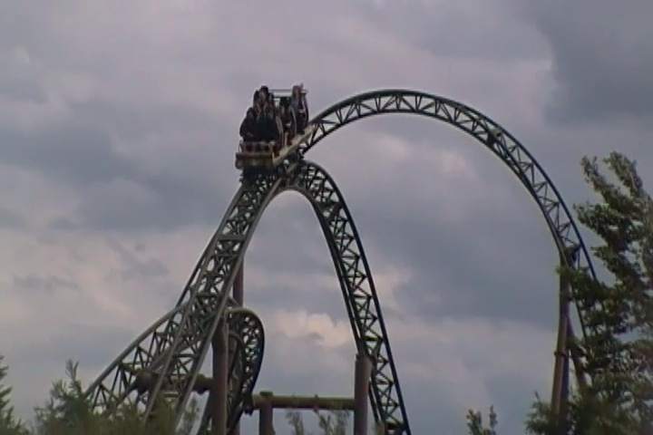
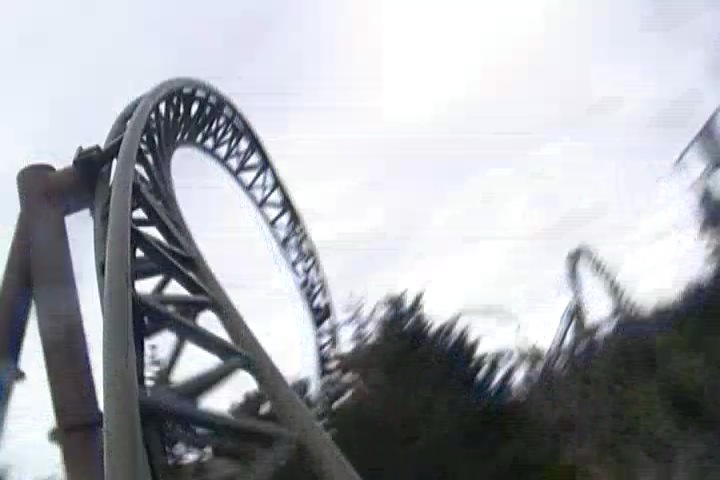

| |
Lynet Review

For today's review, we are heading to Fårup Sommerland to review the parks Infinity Coaster, Lynet. Now those Infinity Coasters are sort of like Euro-Fighters, only with a launch instead of a lifthill and a beyond 90 degree drop. And shockingly, there's only two of these in the world. Yeah. That shocked me. I honestly expected there to be more of these kinds of rides. But there's only one other one aside from Lynet. And it's a real shame as these rides are really underrated. Seriously, Lynet is a great coaster that doesn't get the sort of credit that it totally deserves. It's an awesome ride. So let's dive right in. We get in the cars, pull down the OTSRs, and away we go. We head down a small little dip and BAM!!! Outside and launching. The launch is pretty good. Far from the best launch ever. But you know what? It really works. It gives us a nice kick and really sets us off. We then head into the top hat. It doesn't look that big from off the ride. Almost like you can just reach down and pet it. And to be fair, you do just fly right over the top hat. YOINK!!! Got some good airtime and then twist back down to the ground. OK, this is great. I'm loving this. We then head up into this airtime hill that looks a similar size to the top hat. But we don't slow down at all. We just power on through it and BAM!!! Ejector Air. And this sh*t is strong. OK. I'm loving this. I'm really loving this ride. We then head up another hill and rise up into a midcourse brake, gliding straight into the brakes. But in all honesty, the brakes don't really affect us that much. They act far more like a trim, just gliding through, slowing down a little bit, just to head down into a spiral drop. WEE!!! We then head into a Zero G Roll that just takes us and flips us upsidedown. It's very quick, but it's mildly disorienting and definetly spices up the ride. Yeah, some will complain that there's a little bit of headbanging in the spiral drop and Zero G Roll. There's no headbanging. Get over it. We then head into this...sort of mini strengal dive that leads into this sharp spiral drop that's just a lot of fun. We gain some more speed through that and tumble into a corkscrew. Wee!! We then head up a small hill that gives us another great pop of ejector air and glide right into another sort of mid course brake. I think this might be one of the only rides I've ridden where it has two mid course brakes. This one does a little more to slow us down, but we've still got some speed and are still having fun. We head around a couple turns, one of which is sort of a downward helix right towards the ground. We head around a sharp turn and rise up into the brake run. Aww. Well, at least there's one last little pop of airtime into the final brake run. And yeah. This ride is good. Really freaking good. In all honesty, it kind of reminds me more of the Intamin Rocket coasters than it does the Gerslauter Eurofighters. This feels like Gerslauters attempt at a Rocket Coaster, and they do a great job. I mean, it has a fun launch, a nice top hat, some good speed, twisty inversions, and even some decent laterals. It's just an incredibly fun ride. It's a shame that this ride doesn't get more attention because it really is a fun ride. Definetly give it a ride when at Fårup Sommerland.
8/10
Location: Fårup Sommerland
Opened: 2008
Built by: Gerslauter
Last Ridden: June 20, 2014
Lynet Photos




Home
|